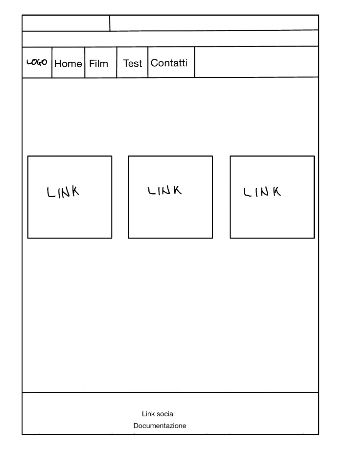

DOCUMENTAZIONE
ABSTRACT: Il sito nasce con lo scopo di rendere più facile e accessibile la conoscenza di film musicali e dei loro brani, originali e non. Ho cercato di realizzare un sito semplice e intuitivo, rivolto a una fascia di utenti appassionata sia al cinema che alla musica dando modo di conoscere film e playlist nuove.
PROJECT MANAGER PLAN:
Benchmarking:
Obiettivi: Creare una piattaforma coinvolgente e informativa per gli amanti del cinema e della musica dove possono avere la possibilità di esplorare l'intersezione tra cinema e musica, grazie alle schede dei film e alle playlist cliccabili. Inoltre è un sito adatto alle nuove generazioni o agli inesperti curiosi di questa arte, aiutandoli e incoraggiandoli a esplorare questo connubio creativo.
Target utente: Il target a cui il sito si rivolge è piuttosto ampio e diversificato: principalmente adolescenti e adulti giovani, compresi tra i 15 e i 40 anni.
Tra questi compresi sia cinefili o appassionati di musica, sia a chi vorrebbe approcciarsi questo mondo.
Competitors:
I siti a cui ho fatto affidamento sono Letterboxd e Music.Film.
Letterboxd è un social network incentrato sulla condivisione di opinioni riguardo ai film. È possibile cercare film a cui si è interessati, leggere una breve descrizione e poi anche recensirli. Inoltre vi è anche la possibilità di ricercare delle liste che raggruppano tipologie di film a seconda del genere, dei gusti, dell’umore, ecc. Letterboxd è solo in lingua inglese e dà la possibilità, una volta cercato un film, di mostrare su che servizio di streaming è reperibile. Non mostra quindi la playlist del film.
Sound.music è un nuovo sito per la ricerca delle colonne sonore e delle musiche dei film. Il sito è esclusivamente in lingua inglese. Dà la possibilità di cercare album, playlist e compositori. Non dà la possibilità di cercare prima il film, e poi la playlist.
Struttura e Layout:
1. Architettura del sito:
2. Wireframe
 Look and Feel:
Il sito vuole essere semplice e intuitivo e per questo motivo è stato scelto uno sfondo neutro del colore rgb(245, 240, 225) che crea una sensazione di pulizia e calma. Per la barra di navigazione ho scelto il colore rgb(35, 79, 112), colore più scuro che pone attenzioni sui comandi ma comunque che dà una sensazione di calma. Il font che ho usato per i titoli e i testi in evidenza è "DM Serif Display" che dà un tocco di stile. Il font principale è "DM Sans", chiaro e leggibile.
La homepage è strutturata in maniera semplice con un carosello di immagini scelte per dare colore, il titolo e tre colonne con i corrispetti link che ti introducono al sito.
Il logo è l'asticella usata oer fare "ciak" con una nota musicale all'interno.
Linguaggi e strumenti:
Linguaggi Web: HTML e CSS.
Strumenti:
Sublime Text 4
Bootstrap
Google fonts (per I caratteri)
Fontawesome (per le icone)
Google Analitycs (per le visualizzazioni)
GitHub (per la pubblicazione)
Spotify e Apple Music (per le playlist)
Instagram, Twitter e Whatsapp (per la promozione)
Notability (per disegnare il wireframe)
Uquiz (per i quiz)
Communication strategy:
Background: L'Italia, al contrario di altri paesi come per esempio l'America o l'Inghilterra, non ha una cultura sui musical (sia a teatro che al cinema). Anzi, la maggior parte delle volte vengono visti negativamente, come film di seconda categoria non al pari di film "normali". Lo stesso discorso può valere anche per semplici film sulla musica o film con canzoni originali che in Italia sono quasi completamente assenti. Questo sito che può sembrare di nicchia e particolare vuole creare una guida ABC e un luogo dove si possono conoscere nuovi film, musiche e playlist per coinvolgere il pubblico italiano.
Obiettivi comunicativi: prendendo in considerazione il target audience, i social migliori dove poter promuovere il sito sono Instagram e Twitter.
Target audience e messaggio: Il sito è pensato per un gruppo eterogeneo di appassionati di cinema, musica e film. Si rivolge sia agli amanti del cinema che decidono di scoprire nuovi film legati alla musica e avere una colonna sonora facilmente reperibile o viceversa: dalla colonna sonora risalire al film. Il pubblico quindi può variare dall'adolescente appena introdotto a questo mondo agli adulti curiosi che cercano nuove forme di ispirazione.
Promozione: Il sito è stato promosso condividendo il link su Instagram e Twitter nella pagina dedicata e inviando la URL a vari contatti e gruppi su Whatsapp.
Valutazione risultati:
Obiettivo di 50 visualizzazioni del sito.Obiettivo di 25 follower su Instagram.